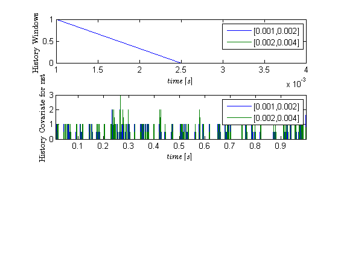
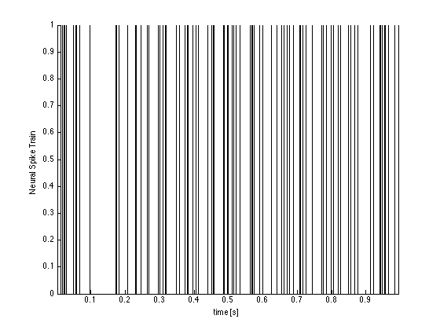
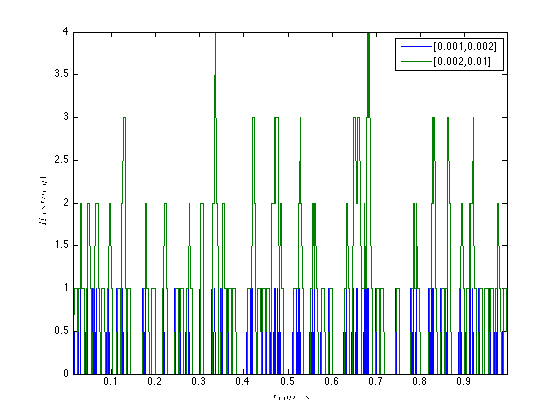

Contents
Test History
Generete a nspikeTrain and define a set of history windows of interest. We desire windows from 1-2ms, 2-3ms, 3-5ms, and 5ms-10ms. The history object with this windows in created below and then the
spikeTimes = sort(rand(1,100))*1;
nst = nspikeTrain(spikeTimes,'n1',.001);
windowTimes = [.001 .002 .004];
h=History(windowTimes);
/
The firing activity within each window is computed by calling the computeHistory method on a nspikeTrain, nstColl, or a cell array of nspikeTrains
histn1=h.computeHistory(nst); figure; subplot(3,1,1); h.plot; ylabel('History Windows'); subplot(3,1,2); histn1.plot; ylabel('History Covariate for nst'); figure; nst.plot; ylabel('Neural Spike Train'); 
Example 2: History covariates for a collection of Neural Spikes (nstColl)
It is possible to compute history covariates for all the nspikeTrains in a nstColl simultaneously.
Generate data and create a nstColl
clear nst; for i=1:1 spikeTimes = sort(rand(1,100))*1; nst{i}=nspikeTrain(spikeTimes,'',.001); %nst{i}.setName(strcat('Neuron',num2str(i))); end spikeColl=nstColl(nst); windowTimes = [.001 .002 .01]; h=History(windowTimes);
generate a CovColl (collection of covariates) by applying the computing the history of the entire nstColl
histColl = h.computeHistory(spikeColl); figure; histColl.plot;